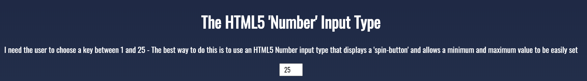
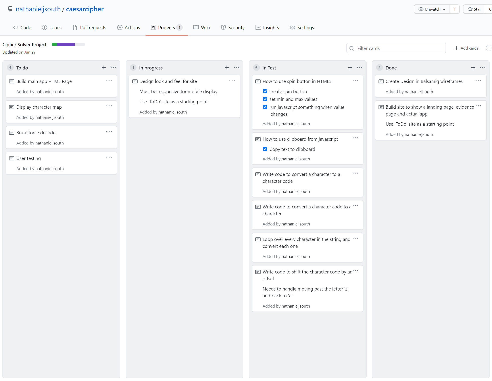
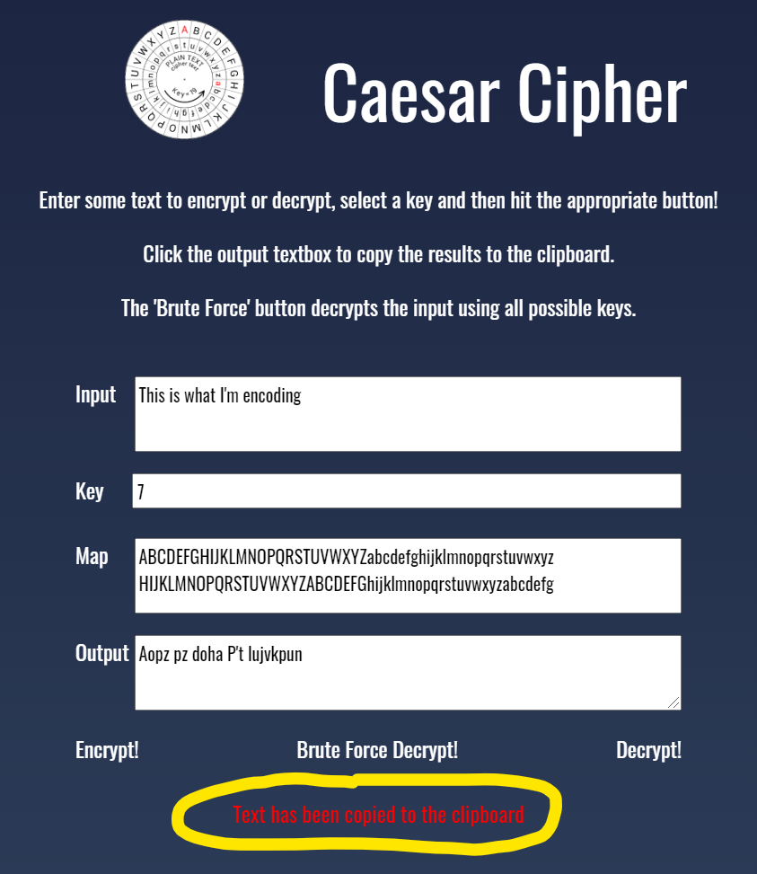
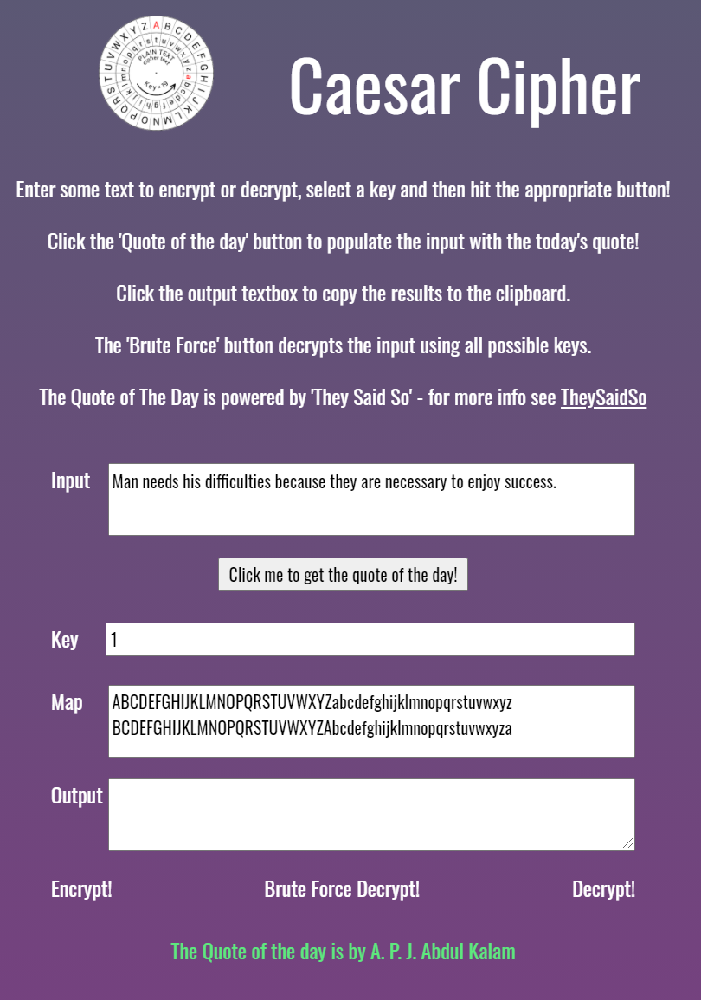
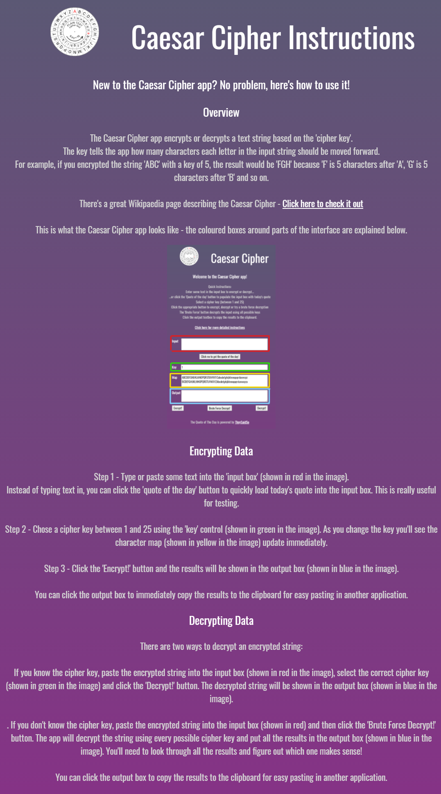

A few issues that I found and fixed are listed here.
I found that although the HTML5 number input type allows me to set a min and max value, these only apply to the spin buttons. If the user types in a bigger / smaller number then the input field does not prevent this. I added code to handle the 'onInput' event that checks whether the input is between the min and max values - if it's greater than the max then the code sets the value to the max, if it's smaller than the min the code sets the value to the min. In the image below I tried to type in 51 but the value gets set to 25
Decryption - I was inspired by the circular wheel design of my icon. I recognised that there are two ways to decrypt a Caesar Cipher. You can either reverse the encryption by the same key value (so encrypt with a key of 5 and decrypt with a key of -5), or you can encrypt with a key of 5 and encrypt again with a key of 21 to fully rotate the cipher back to the original values. By using this 'encrypt twice' approach for decryption, I can simply use exactly the same code for encryption and decryption, minimising the required code and reducing the chance of errors.
I found using Github's planner boards really useful as it allowed me to plan my work really clearly. Also, when I discovered something that I needed to add, the board gave me the perfect place to record it. I liked the way the board encourages me to move through the stages of development , test and completion. Here's a screenshot of my board while I was building the app.
The 'value' property of the number input field actually returns a string, not the numeric value. This meant that I had to convert it to a number (using the Number() menthod) before using it in math operations. This caused me some testing and debugging pain!
I noticed that when the user copies the output, a message is displayed (which is correct), but it stays there so if the user copies the output again there is no indication that the copy has worked. The image below shows the message.
I decided that it would be better to make the message disappear after a certain amount of time. To do this I had to look into running code on a timer in javascript.
I thought it would be a good idea to help my testers and users out by providing a way to load the 'quote of the day' into the input box. This meant testers / users didn't have to continuously type input text when they used the app. I loaded the quote of the day by calling the 'They Said So' webservice using the Javascript 'Fetch' method. The image below shows the form with the quote of the day loaded and the author shown in the 'messages' area.
Close to the end of my project, I did some more user testing by asking people who had never seen my app before to assess how easy it was to use. In general the testers thought that the app was easy to use but a single user said they didn't understand what they were meant to do. This feedback resulted in me adding a new dedicated step-by-step instruction page to the app that walked a new user through how to use the app, including screenshots of each stage. This feedback helped by encouraging me to cater for all types of users, ranging from those who are experienced app / website users all the way to very inexperienced users. The instructions page is shown below:
